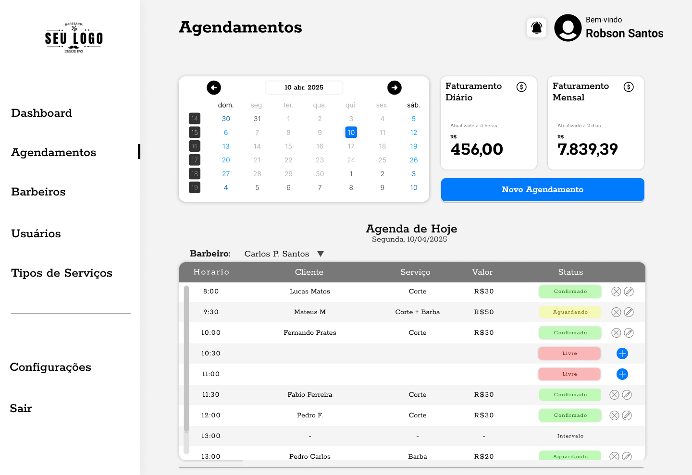
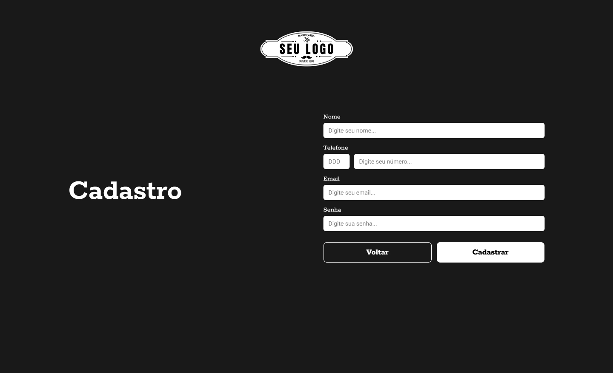
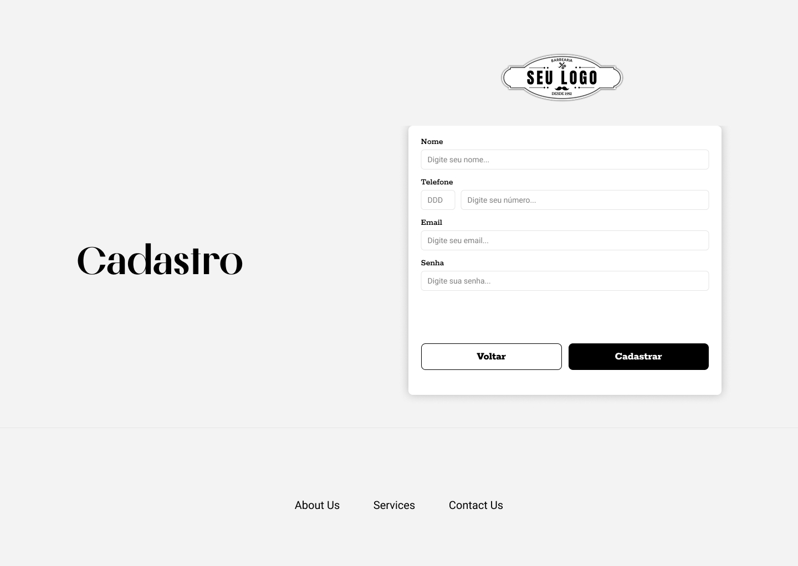
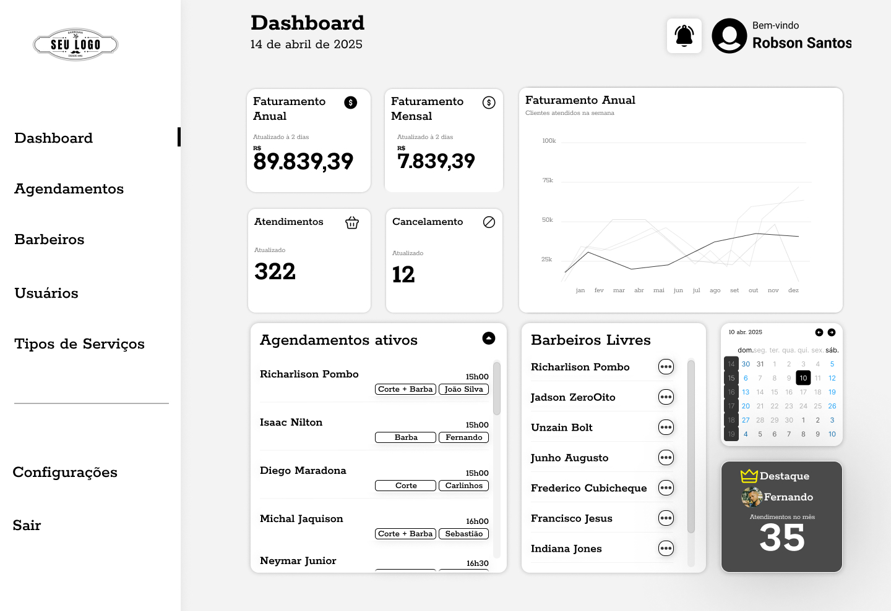
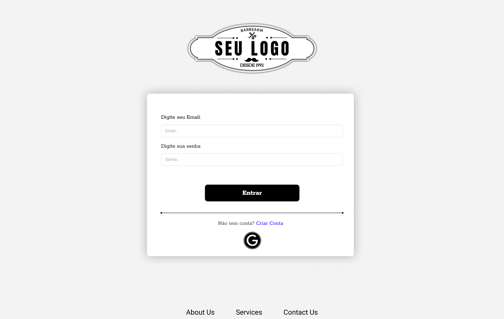

Barbearia SaaS
Plataforma administrativa desenvolvida para digitalizar e organizar a operação de barbearias. O sistema centraliza agendamentos, equipe e métricas, oferecendo uma visão estratégica do negócio com foco em eficiência, escalabilidade e tomada de decisão.
Desafio
O processo de agendamento era feito manualmente via mensagens, causando conflitos de horário, perda de clientes e falta de controle operacional.
Além disso, não havia visibilidade sobre desempenho da equipe, serviços mais vendidos ou organização da agenda — limitando o crescimento do negócio.
Solução
Foi projetado um sistema administrativo completo, focado em simplificar a operação e dar autonomia ao gestor.
- Gestão centralizada de agendamentos
- Controle de barbeiros e horários disponíveis
- Configuração dinâmica de serviços e preços
- Dashboard com métricas de desempenho
- Organização clara da agenda em tempo real
Resultado
A solução transforma um processo manual e desorganizado em um fluxo digital estruturado, reduzindo erros operacionais e aumentando a previsibilidade do negócio.
O sistema permite decisões mais estratégicas, melhora a experiência do cliente e abre caminho para crescimento escalável da operação.
Visão de Produto
O projeto foi concebido com mentalidade de produto SaaS, permitindo expansão para múltiplas unidades, relatórios financeiros avançados e integrações futuras com pagamentos online.
Interface do Sistema




